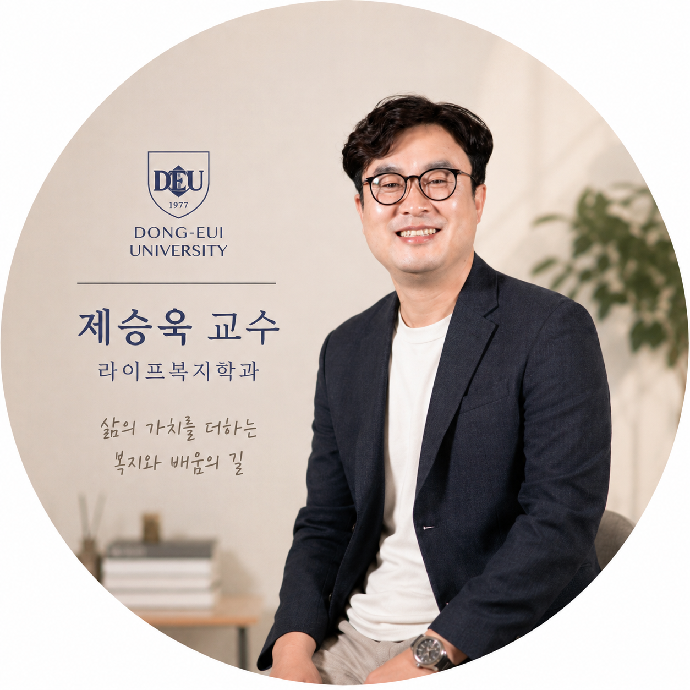

기초 다지기
- 사회복지와서비스
- 사회복지윤리와철학
- 사회복지학개론
- 심리학입문 · 경영학입문
삶의 경험이 배움이 되고, 배움이 누군가의 내일을 바꾸는 곳. 동의대학교 라이프복지학과에서 새로운 가능성을 시작하세요.

라이프복지학과는 사회복지의 가치와 실천을 중심으로 사람과 지역사회의 삶을 살펴봅니다. 다양한 삶의 경험을 가진 학습자가 함께 공부하며, 변화하는 복지 현장에서 필요한 지식과 역량을 키웁니다.
경험과 현장을 연결하는 배움,
교수진과 함께 차근차근 만들어갑니다.

학생 한 사람 한 사람의 배움과 성장을 지원합니다. 세부 강의 및 연구 정보와 상담은 학과 공식 홈페이지에서 확인할 수 있습니다.
제승욱 교수라이프복지학과 주임교수 · 공식 교수 소개와 최신 프로필은 학과 사이트에서 확인공식 교수 프로필 보기 ↗
사회복지 기초부터 현장 실천까지.
생애와 복지를 폭넓게 연결하는 교육과정입니다.
공식 이수표에 수록된 교과목을 주제별로 묶어 소개합니다.
막대는 정량 통계가 아닌 학습 영역의 구성 개념도입니다.
모집 시기와 지원 자격, 전형 및 제출 서류는 학년도에 따라 달라질 수 있습니다. 최신 모집요강을 확인하거나 학과에 상담해 주세요.
현장학습부터 입학식까지,
라이프복지학과의 활동을 만나보세요.
학과 활동 사진은 시안용 예시 이미지입니다. 교수님이 제공한 프로필 사진을 사용했습니다.